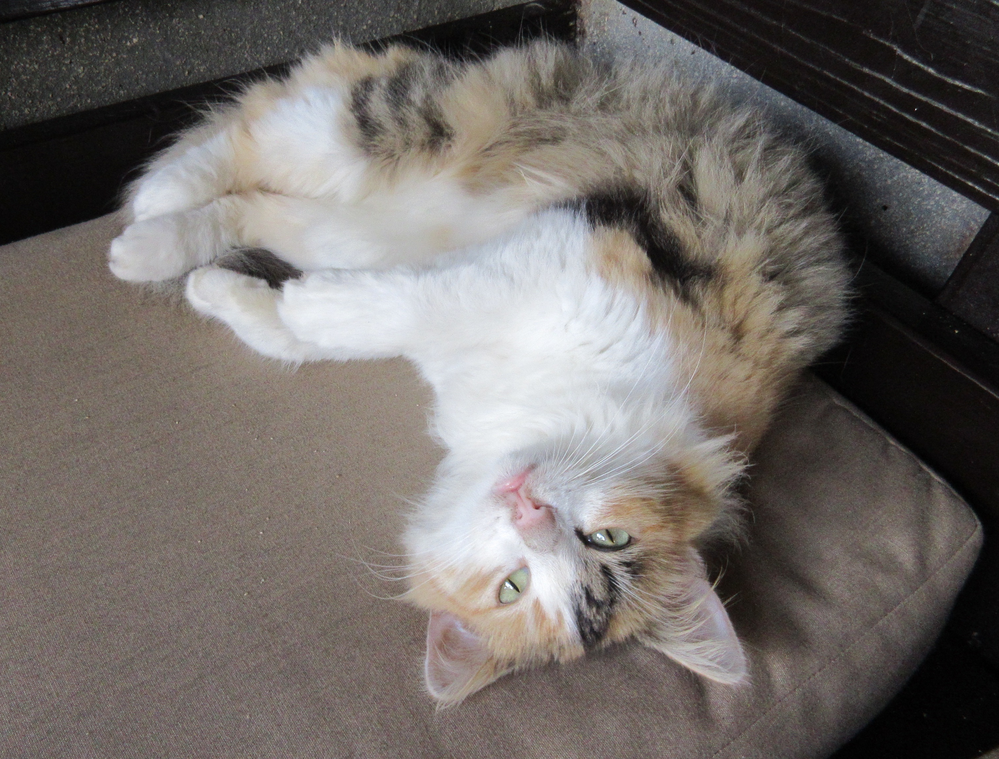

|  |
WinstonAge: 5 months Sex: Male Good with: Winston prefers to sleep most of the time, so be sure to purchase the comfiest bed that can go in a nice sunny spot. When Winston is awake, he loves to be cuddled gently. A quiet atmosphere is what Winston prefers, so make sure he is not around too many people. |